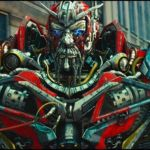

Su principal razón de ser el malo es en su mayor parte, salvar su planeta Cyberton de la guerra de los decepticons y a su gente, es decir, busca el común de su especie, aunque claro eso no lo vuelve el bueno de la historia, ya que está dispuesto sacrificar y matar a especie inocente (humanos) que no tienen nada que ver con su guerra y tener rasgos de racismo y elitismo.